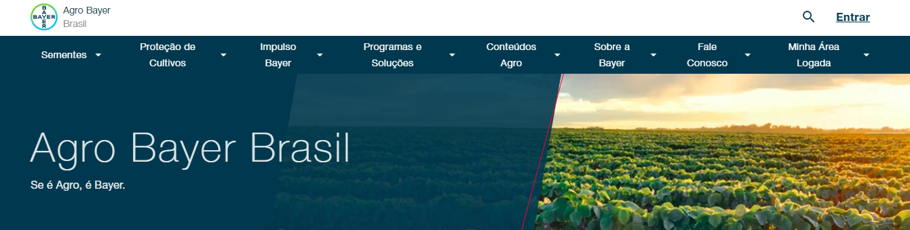
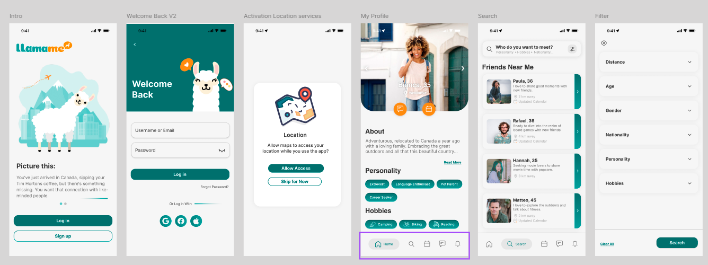
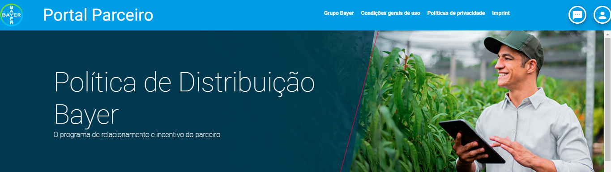

Welcome to my portifolio!
Please, select the language:


Oii, eu sou a Juliana Pliger!
Desenvolvedora
JavaScript
"As invenções são, sobretudo, o resultado de um trabalho teimoso."
Santos
Dumont
- JavaScript
- TypeScript
- NextJs
- React
- React Native
- Redux
- Rest
- Angular
- NodeJs
- HTML
- CSS
- Tailwind
- Bootstrap
- MySQL
- Postman
- Firebase
- Scrum
- Kaban
- Azure
- Aha!
- Monday
- Asana
- Trello
- Storybook
- Adobe Cloud
- AWS
- GIT
- WSL
- Analytics
- Figma
- UX/UI
- Fundamentos de Cyber Security
- Discovery
- POC
- JavaScript
- TypeScript
- NextJs
- React
- React Native
- Redux
- Rest
- Angular
- NodeJs
- HTML
- CSS
- Tailwind
- Bootstrap
- MySQL
- Postman
- Firebase
- Scrum
- Kaban
- Azure
- Aha!
- Monday
- Asana
- Trello
- Storybook
- Adobe Cloud
- AWS
- GIT
- WSL
- Analytics
- Figma
- UX/UI
- Fundamentos de Cyber Security
- Discovery
- POC
Skills

React | Next | Angular

JavaScript | TypeScript
TailWind | BootStrap
AWS | AEM (Adobe Cloud)

Node Js | Nest Js
Python
Data Base | Analytics | PostMan
Soft Skills
Comunicação
Trabalho em equipe
Adaptabilidade
Resolução de problemas
Gestão de tempo
Empatia
Pensamento crítico
Liderança
Creatividade
Inteligência emocional
Projetos
Agro Bayer
O Farmer Experience também conhecido como Agro Bayer, é um site innersource monorepo global que é divido entre as seguintes regiões: Brazil, Argentina, Latam (America latina exceto Brasil e Argentina), Canadá, Estados Unidos e Emea (Europa, Oriente Médio e Africa). Sendo innersource, contruimos features globais e locais ou adpatações para determinado país. O Projeto em si é o Blog do agro, onde você encontra noticias, informações sobre os produtos Bayer (sementes e proteção de cultivos), canal de comunicação, onde comprar com forcenedores credenciados, além de contar com uma área logada com programa de pontos (Orbia), cashback, solicitações de visitas tecnicas e muito mais.
Destaques:
Refatoração de Código: Liderança em um projeto de refatoração de 10.000 linhas de código no analytics e rastreamento de dados, em colaboração com o time global e o time de conteúdo americano. Desenvolvi um novo padrão compatível com novas tecnologias, adotado por mais 5 países.
Reconhecimento: Por ter liderado o projeto de analytics recebi o premio Brazil Innovation Sprint Awards - The Analyzer (Analytics / Metrics) - Most involved data contributor.
Colaboração Internacional: Trabalho conjunto com equipes globais e locais para garantir que as soluções atendam às necessidades específicas de cada região. Todo o trabalho foi realizado 100% em inglês, facilitando a comunicação e a colaboração entre membros de diferentes países e culturas.
AcesseLlamame
O Llamame é um aplicativo projetado para conectar pessoas ao redor do mundo, com um foco especial em viajantes solitários que desejam fazer novos amigos em cidades ou países desconhecidos. Idealizado pela Innova Tech, uma startup dedicada à inovação tecnológica, o Llamame foi concebido para ser uma experiência totalmente mobile, com suporte integrado para smartwatches. Trabalhei como tech Lead e Staff nesse projeto desde a primeira linha de código até a entrega final, tomando as decisões tecnincas e garantindo que o aplicativo estivesse alinhado com o objetivo da empresa. Ele será lançado oficialmente em fevereiro de 2025 na Apple store e Google Play.
Destaques:
Liderança Técnica: Como Tech Lead, fui responsável por transformar essa ideia em realidade, desde a escolha das tecnologias até a colaboração com as áreas de negócio para alinhar requisitos técnicos com os objetivos estratégicos da empresa.
Documentação e Refinamento: Escrevi a documentação completa do projeto e conduzi refinamentos técnicos com o time de desenvolvedores, garantindo a qualidade e a eficiência do desenvolvimento.
Inovação Mobile: Desenvolvi uma experiência totalmente mobile com suporte para smartwatches, proporcionando uma interface moderna e acessível para os usuários.
Em BrevePartner Experience
O Partner Experience é uma plataforma para gerenciamento de safras, que conta com três tipos de usuários, o Administrador (funcionário Bayer), o engenheiro agronomo (RTV) e o Parceiro (Fazendeiro), cada um com seus niveis de acessos separados com diferentes funcionalidades, utilizamos o interceptor para verificar tokens e garantir a segurança e o controle de informações. Esse foi um projeto que acompanhei seu full cycle, desde seu planejamento a até sua entrega.
Destaques:
Segurança e Controle: Implementação de interceptors para verificação de tokens, assegurando a segurança e o controle das informações.
Gestão de Usuários: Desenvolvimento de funcionalidades específicas para cada tipo de usuário, garantindo uma experiência personalizada e eficiente.
Ciclo Completo: Participação ativa em todas as fases do projeto, desde o planejamento até a entrega final, assegurando a qualidade e a eficácia da plataforma.
AcesseTeste Tecnico
O Country Info App é um exemplo de avaliação para engenheiros Full-Stack, que envolve a construção de duas pequenas aplicações para fornecer informações sobre países. A aplicação inclui um Backend (BE) construído com Nest.Js e um Frontend (FE) construído com React e Next.js. O objetivo é criar uma aplicação funcional que forneça informações detalhadas sobre países, utilizando diversas APIs.
Destaques:
Tarefas do Backend: Criação de endpoints de API para obter a lista de países disponíveis e informações detalhadas sobre um país específico, incluindo países fronteiriços, dados populacionais históricos e URL da bandeira usando Nest.Js.
Tarefas do Frontend: Desenvolvimento de páginas para exibir a lista de países e informações detalhadas sobre o país selecionado, incluindo nome, bandeira, países fronteiriços e gráfico de população, usando Next.Js e React.
Extras: Estilização responsiva, uso de variáveis de ambiente, garantia de qualidade do código com ESLint e Prettier, e documentação completa no README.md.
AcesseConquistas
- POC Analytics - adoção global: Refatoração com mais de 10.000 linhas de código no analytics, o novo conceito foi adotado por mais 5 países.
- Brazil Innovation Sprint Awards - The Analyzer: Recebi um prêmio por colaborar significativamente para o projeto Agro Bayer.
- Mil horas de Programação: Mais de mil horas ministrando aulas usando Javascript, React / React Native, HTML, CSS e NodeJs.
- Entrega Bem Sucedida: Entrega de plataforma global no Agro com equipes LATAM e USA.
Trajetória
Bayer – Desenvolvedor web
fev de 2023 até o momento - São Paulo, Brasil · Híbrida
- Responsável por um projeto de refatoração com mais de 10.000 linhas de código no analytics, o novo conceito foi adotado por mais 5 países.
- Brazil Innovation Sprint Awards - The Analyzer (Analytics / Metrics) - Most involved data contributor.
- Integração de componentes com o Adobe AEM e AWS.
- Integração com o banco de dados e consumo de APIs.
- Garantia de uma interface de usuário contínua e responsiva.
- Implementação de testes unitários com Jest.
- Escrita de documentações e melhoria da qualidade geral do código.
- Apresentação de novas features para os times globais em reuniões de demonstração.
- Discussão com o time técnico sobre requisitos, desempenho, design e tecnologias emergentes.
- Colaboração com as áreas de negócio para alinhar requisitos técnicos com os objetivos estratégicos da empresa.
Byju’s Future School – Professora de Programação
fevereiro de 2021 até janeiro de 2023 - São Paulo, Brasil · Remoto
- Ensinava crianças e adolescentes a se tornarem futuros desenvolvedores do zero.
- Foco em desenvolver jogos, aplicativos e páginas web.
- A grade do curso incluía desde fundamentos e lógica de programação a processos de machine learning.
- Plataformas: MIT, VScode e Expo.
- IDE de Desenvolvimento: ROBLOX STUDIO e VSCODE.
A peça atrás do computador
Sou uma zillenium apaixonada por tecnologia. A programação pra mim é mais do que trabalho, é
uma forma de ver o mundo pelos bastidores e uma ferramenta poderosa, que me abriu muitas portas
e me ajudou a alcançar sonhos.
Minha jornada começou com C#, quando entrei na faculdade com 17 anos, minha
paixão por jogos e minhas habilidades em desenhar me levou a cursar Desenvolvimento de
Jogos e Aplicativos, e ao longo dos anos, expandi meu conhecimento principalmente
no Frontend. Amo a sensação de resolver problemas complexos, parece até um gol
do Brasil na copa.
Além de codificar, sou uma grande entusiasta de Design, após terminar a
faculdade em 2016, fiz muitos trabalhos freelancer como renda extra. Já usava metodologias
ágeis como Scrum e Kanban, que me ajudam a manter a organização e a eficiência
nas entregas. O que curiosamente me levou a trabalhar também com eventos, onde eu
definitivamente refinei todas as minhas soft skills.
Fora do mundo da tecnologia, sou uma pessoa que valoriza a família e os amigos. Adoro viajar,
planejar viagens e conhecer novas culturas. Essas experiências me ajudam a manter a mente
aberta e a criar novas perspectivas. Além de claro jogar um video game e
assistir o jogo do Pittsburgh Steelers no domingo comendo besteira!
Estou sempre em busca de novos desafios e oportunidades para crescer, tanto
profissionalmente quanto pessoalmente. Se você quiser saber mais sobre mim ou discutir
possíveis colaborações, sinta-se à vontade para entrar em contato! Podemos marcar de tomar um
café :D